ABOUT私のこと
東京在住、４６46歳の愛美です。
人の想いをカタチにすることに魅力を感じ
Webデザインを学び始めました。
「本当はこんなことを伝えたい」
そんな想いに丁寧に耳を傾け、
その人らしさが伝わるデザインを大切にしています。
ただ作るだけでなく、
「どうしたらもっと伝わるだろう？」
を一緒に考え、必要なことはご提案できるデザイナーでありたい。
そんな気持ちで一つひとつ丁寧に向き合っています。
CAREERCareer経歴

- 2000
IT企業に入社IT企業に入社
中小企業向けのシステム開発に携わり、大手企業への出向も経験。プログラミングだけでなく、システムエンジニアとして設計にも携わりました。主にC言語・VisualC++を使用し、物流システム、会計システム、病院関係、旅行予約システムなど、さまざまなシステム開発や既存システムの保守・改修を経験。海外出張も経験しました。
- 2010
出産を機に退職出産を機に退職、PTA本部活動
二人の子供の育児に専念する期間をいただきました。子育て期間中には、幼稚園・小学校・中学校でPTA役員を経験し、現在も中学校のPTA本部役員として活動しています。
- 2017
スーパーマーケットに勤務スーパーマーケットに勤務
サービスカウンターを担当し、現在まで勤務。お客様対応・電話対応・事務処理・シフト作成・手土産の発注など、幅広い業務に携わっています。接客を通して、さまざまなお客様とのコミュニケーションを経験しました。
- 2026
Webデザイナーを目指して活動Webデザイナーを目指し活動
スーパーマーケットで勤務しながら、フリーランスのWebデザイナーを目指してスクールで学習中。これまでのIT・接客・事務・人とのかかわりの経験を活かし、相手の想いをくみ取ったデザインを届けられるWebデザイナーを目指しています。
SKILLSSkillsできること
Canva
名刺・SNS画像などの
デザイン制作名刺やSNS画像などのデザイン制作Figma
Webサイトのデザイン
ワイヤーフレーム制作Webサイト・構成案・ワイヤーフレーム制作Wix
Webサイトの構築・編集Webサイトの構築・編集

 CONTACT
CONTACT
まずはお気軽にご相談ください。
お問い合わせ